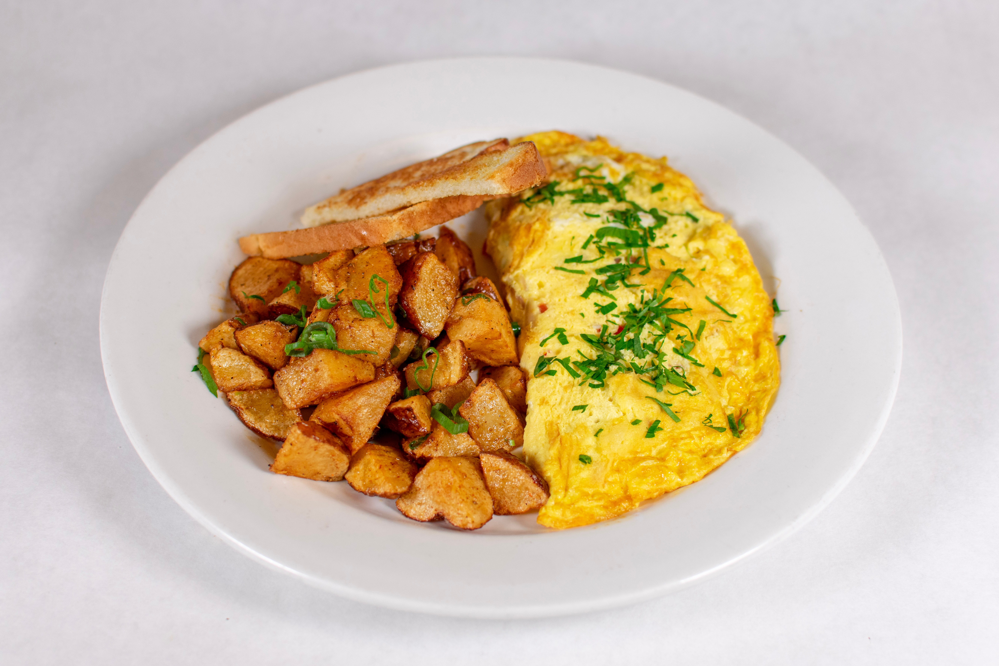

Recipe-Scrambled Egg

Description
Scrambled eggs are a classic breakfast dish made by whisking eggs with a small amount of milk or cream, and then cooking the mixture in a pan until the eggs are set and fluffy. Scrambled eggs can be served on their own or as part of a larger breakfast spread, and are a quick and easy way to start your day.
Ingredients
- Eggs
- Milk or cream
- Salt
- Pepper
- Butter or oil for cooking
Steps
- In a bowl, whisk together eggs, milk, salt, and pepper until well combined.
- In a non-stick pan, heat a small amount of butter or oil over medium heat.
- Once the butter or oil is hot, pour the egg mixture into the pan and let it cook for 15-20 seconds.
- Using a spatula, gently push the cooked edges of the eggs towards the center of the pan, allowing the uncooked eggs to flow to the edges.
- Repeat this process until the eggs are cooked through and no longer runny.
- Once the eggs are cooked, remove the pan from the heat and transfer the scrambled eggs to a plate.